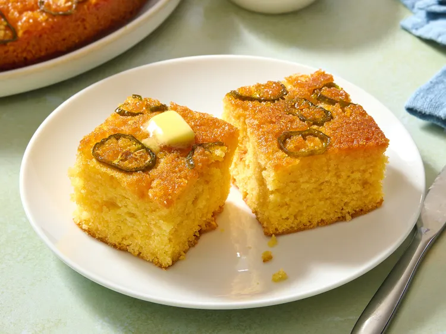

Home
Cornbread!

Jalapeno Honey Cornbread!
This hot honey jalapeno cornbread takes cornbread to a whole new level. Like an upside-down cake, hot honey, butter, and jalapeno pepper slices form the top, and a hot honey butter drizzle adds a delicious finish. Make sure to serve it straight out of the oven, or reheat it prior to serving.
This recipe and all of the information on this page, belong to a third party. The original recipe, as well as all of this material, is from allrecipes.com, and is only being used for educational purposes.
Ingredients:
- 3/4 cup butter, divided
- 2 large eggs, at room temperature
- 1 cup buttermilk, at room temperature
- 1 cup hot honey, such as Mike's® Hot Honey, divided
- 1/4 cup white sugar
- 1 1/2 cups all-purpose flour
- 1 cup cornmeal
- 1 tablespoon baking powder
- 1 teaspoon salt
- 4 jalapenos, sliced, or more as needed
Steps:
- Gather All Ingredients
- Melt 1/2 cup of butter. Set aside to cool slightly.
- In a large bowl whisk eggs and buttermilk together. Slowly add melted butter, a little at a time. Add 1/2 cup hot honey and sugar. Whisk in flour, cornmeal, baking powder, and salt. Cover the bowl and let the batter rest in the refrigerator for 20 to 30 minutes.
- Preheat the oven to 350 degrees F (180 degrees C). Spray a 9-inch round cake pan with nonstick cooking spray.
- Melt remaining 1/4 cup butter. Add 1/2 cup hot honey and stir until well combined. Set 1/4 cup of mixture aside. Pour remaining hot honey butter into the cake pan. Place sliced jalapenos on top of honey, covering the entire surface.
- Carefully pour cornbread mixture over jalapenos.
- Bake in the preheated oven until a toothpick inserted in the center comes out clean, 45 to 50 minutes.
- Cool cornbread in the pan for 15 minutes. Carefully invert onto a serving dish. Serve topped with remaining hot honey butter.